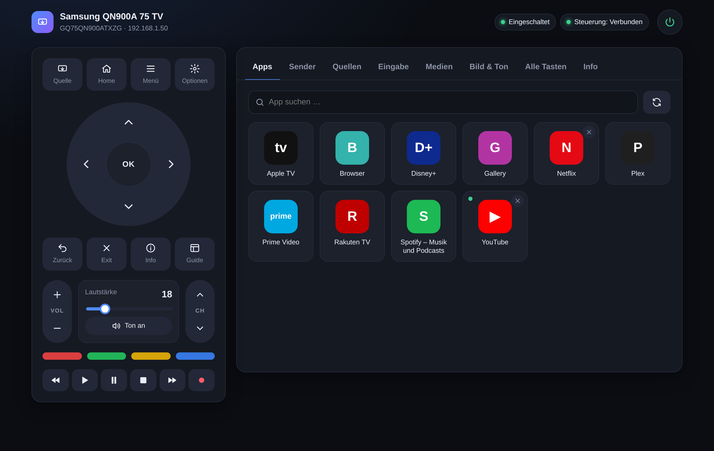
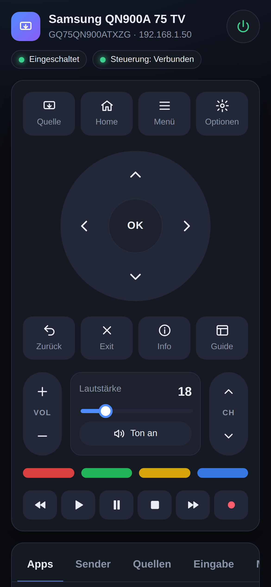
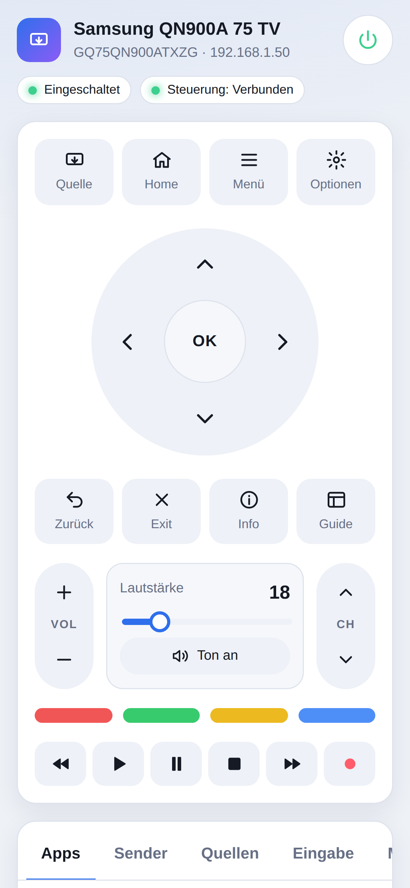

A clean remote control for desktop, tablet and phone – with apps, volume, text input and media playback. Runs locally on your home network, no cloud required.

Talks directly to the TV’s own interfaces: the WebSocket remote API, the REST API and DLNA.
D-pad, Home, Menu, Back, color and playback keys. Press and hold to repeat.
Installed apps in one click, with search and an indicator for what is running.
Set the exact volume level and mute, with a live readout of the current value.
Type search terms on your keyboard, move the pointer with a touchpad, open web pages in the TV browser.
Play video, audio or image URLs from your home network directly on the TV via DLNA.
Wake from standby via key press or Wake-on-LAN – including under WSL2.
Responsive from phone to large monitor, light and dark theme, keyboard shortcuts on desktop.
No cloud, no account. Optional SmartThings integration for direct picture and sound modes.
Every function in clearly organized tabs – the remote always stays in view. The interface itself is currently in German.
Apps: launch installed apps; running apps can be closed right away.


On a phone the page becomes a full remote – large buttons, haptic feedback on tap, volume via slider.
Open your computer’s address in the phone browser and add it to your home screen.
Requirements: Node.js 18 or newer and a Samsung Tizen TV on the same network.
# get the project git clone https://github.com/mupf-dev/samsung-tv-web-remote.git cd samsung-tv-web-remote npm install # enter your TV’s IP and MAC address cp config.example.json config.json # start → http://localhost:8097 npm start
config.jsonAt least tv.host; the MAC address is needed to power on via Wake-on-LAN.config.json you also get direct picture mode, sound mode and input selection.A small Node server (one single dependency: ws) talks to the TV and serves the interface.
| Feature | Interface |
|---|---|
| Remote keys, text input, touchpad, browser | WebSocket wss://TV:8002 with token pairing |
| Status, checking, launching and closing apps | REST http://TV:8001/api/v2 |
| Volume, mute, media playback | DLNA/UPnP http://TV:9197 |
| Power on from standby | KEY_POWER or Wake-on-LAN |
| Picture mode, sound mode, inputs, direct channel | optional SmartThings API |
config.json.